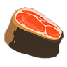

Ingredients
ingredients that can be used for cooking
Information
What is here?
The tables below show the ingredient, the amount of hearts it heals (before being cooked), its location in Hyrule, and the in-game description of that ingredient.
Critical Effects:
Every time you cook a dish you have a chance to get a critical. You can guarentee a critical effect by cooking during a Blood Moon, using a dragon part, or using a Star Fragment. This can be noticed by additional sound / music when the item is revealed / cooked. The critical will add one of five effects.
Monster Extract adds 3 random effects to the dish, one from each catagory of hearts, buff level, and duration.
Hearts:
Monster Extract has chance to either set the heart amount a dish heals for to 1/4, not change the heart amount at all, or add 3 additional hearts.
Buff Level:
Monster Extract has % chance to either lower, not change, or increase the buff level of a dish.
Duration:
Monster Extract has chance to either set the duration of a buff to a minute, not change it, or increase it to its max: half an hour.
Note:
The locations are not complete.
The tables below show the ingredient, the amount of hearts it heals (before being cooked), its location in Hyrule, and the in-game description of that ingredient.
Critical Effects:
Every time you cook a dish you have a chance to get a critical. You can guarentee a critical effect by cooking during a Blood Moon, using a dragon part, or using a Star Fragment. This can be noticed by additional sound / music when the item is revealed / cooked. The critical will add one of five effects.
+3 hearts restored
+1 temporary heart
+2/5 green or yellow stamina
+1 buff level (lvl 1 -> lvl 2, lvl 2 -> lvl 3)
+5:00 duration
Monster Extract adds 3 random effects to the dish, one from each catagory of hearts, buff level, and duration.
Hearts:
Monster Extract has chance to either set the heart amount a dish heals for to 1/4, not change the heart amount at all, or add 3 additional hearts.
| Set to 1/4 | No Change | +3 Hearts |
| 25% | 50% | 25% |
Buff Level:
Monster Extract has % chance to either lower, not change, or increase the buff level of a dish.
| -1 level | No Change | +1 level | |
| level 1 Buff | - | 80% | 20% |
| level 2 Buff | 20% | 60% | 20% |
| level 3 Buff | 40% | 60% | - |
Duration:
Monster Extract has chance to either set the duration of a buff to a minute, not change it, or increase it to its max: half an hour.
| Set to 1:00 | No Change | Set to 30:00 |
| 33% | 33% | 33% |
Note:
The locations are not complete.
Meat
Acquired from hunting small and large game or birds throughout Hyrule
Acquired from hunting small and large game or birds throughout Hyrule
Raw Meat

Raw Prime Meat
Raw Prime Meat
Raw Gourmet Meat
Dropped by small harmless animals
Dropped by big and dangerous animals
Dropped by big and dangerous animals
Meat obtained from animals in plains and forests. You can eat it raw, but cooking it will make it more delicious and nutritious.
A fresh, high-quality piece of animal meat. This stuff isn't easy to come by, so savor it. Cook it to recover more hearts.
This prized cut of meat is usually from a large animal. Any connoisseur would rank this tender, juicy cut of meat "gourmet." Expect an exquisite meal when cooking with this.
Raw Bird Drumstick
Raw Bird Thigh
Raw Whole Bird
Dropped by small and large birds
Dropped by small and large birds
Dropped by White Pigeons and Eldin Ostriches
This meat is tougher and chewier than a standard steak. Tastes better cooked.
A high-quality piece of meat that's hard to come by. You can eat it raw, but cooking it first will recover more hearts.
This prized meat can be obtained from certain birds. It gets full points for flavor, nutrition, and volume. It pairs perfectly with other ingredients or can be enjoyed alone.
Fish
Acquired from hunting fish in lakes, rivers, and oceans throughout Hyrule
Acquired from hunting fish in lakes, rivers, and oceans throughout Hyrule

Hearty Bass
Hyrule Bass

Staminoka Bass
West Necluda, Akkala Highlands
West Necluda, Hyrule Field
West Necluda, Hyrule Field
This large fish lives near the shoreline. Its sizable body can restore a lot of nutrient. When cooked into a dish, it will temporarily increase your maximum hearts.
An ordinary fish that can be found all over Hyrule. Can be eaten raw, but cooking it amplifies its healing benefits.
This Hyrule bass got to be the biggest fish by never getting caught (until now). Its long life results in a cooked dish that will restore a lot of stamina.

Chillfin Trout

Sizzlefin Trout
Voltfin Trout
Tabantha Frontier, Hebra Mountains
Eldin Caynon, Eldin Mountain
Tabantha Frontier, Hyrule Ridge
This blue trout prefers cold bodies of water. Its skin contains enzymes that keep its body cool, and when cooked into a dish, it will temporarily boost your heat resistance.
This red trout prefers warm bodies of water. It has a special organ specifically for storing heat. When cooked into a dish, it temporarily boots your resistance to the cold.
This trout makes its home in the freshwater lakes. Its scales have an insulating compound that, when cooked into a dish, offers resistance to electricity.

Stealthfin Trout
Snake Carp
Mighy Carp
Great Hyrule Forest, Eldin Mountain
West Necluda
Akkala Highlands, Lanayru Great Spring
Consuming the bioluminescent compound that makes this fish glow in the dark will increase concentration. Dishes cooked with it will suppress noise when consumed.
This wild armored carp has been bred into a prizewinning fish. Its beautifully colored markings do not occur in nature. It offers no special effects when cooked.
This freshwater fish lives alongside its less mighty carp ilk. A compound in its liver promotes muscle growth. Dishes cooked with it will temporarily increase your attack power.

Armored Carp

Mighty Porgy

Armored Porgy
Lanayru Great Spring, East Necluda
Necluda Sea, Lanayru Sea
Necluda Sea, Lanayru Sea
Calcium deposits in the scales of this ancient fish make them as hard as armor. Cooking it into a dish will fortify your bones, temporarily increasing your defense.
This ocean-dwelling fish comes with one rude attitude. The compounds in its flesh elevate your competitive spirit when it's cooked into a dish, thus increasing your attack power.
This porgy's body is covered in armor-hard scales. The compounds in its scales, when cooked into a dish, fortify your bones and temporarily boost your defense.
Hearty Salmon
Hebra Mountains, Tabantha Frontier
This fish makes its home in cold water, giving it extra layers of fat. It temporarily increases your maximum hearts when used in cooking.
Seafood
Found on the edges of lakes, rivers, and ocean beaches throughout Hyrule
Found on the edges of lakes, rivers, and ocean beaches throughout Hyrule
Razorclaw Crab
Ironshell Crab
Bright Eyed Crab
Necluda Sea, East Necluda
Necluda Sea, East Necluda
Lanayru Great Spring, Eldin Canyon
This crab is well known for its exceptionally sharp pincers. When cooked, the strength compound in its claws will increase your attack power.
This crab’s shell is particularly hard. When cooked into a dish, its fat and meat bolster the body to increase your defense.
This crab appears in large numbers when it rains. On bite of its delectable meat, and you'll forget all your exhaustion. Replenishes your stamina when cooked into a dish.

Sneaky River Snail
Hearty Blueshell Snail
West Necluda, Lanayru Great Spring
Necluda Sea, Lanayru Sea
This large, glow-in-the-dark snail lives in fresh water. When cooked into a dish, it heightens your senses so you can move about silently.
This snail lives on sandy beaches in large numbers. Its flesh contains a high amount of stimulants, so when cooked into a dish, it temporarily increases your maximum hearts.
Nuts
Found on the ground around trees or from felled trees throughout Hyrule
Found on the ground around trees or from felled trees throughout Hyrule
Acorn
Chikaloo Tree Nut
Dropped By Squirrels
Dropped by Small Birds
Often found on the ground near trees. Squirrels adore this nut, so you may have competition while foraging. Add one to a meal for a nutty seasoning.
Small birds love this nut. You can eat it raw for a minor effect, but it can also be added as a spice to other recipes.
Mushrooms
Found growing in thickets, fields, and mountains throughout Hyrule
Found growing in thickets, fields, and mountains throughout Hyrule
Big Hearty Truffle

Hearty Truffle
Endura Shroom
Hebra Mountains, Mount Lanayru
Hebra Mountains, Great Hyrule Forest
Hyrule Field, Hyrule Ridge
Years of going unpicked have allowed this hearty truffle to grow quite large. It's chock-full of nutrients. When cooked into a dish, it temporarily increases your maximum hearts.
This rare mushroom has a rich scent. Cook it before eating to temporarily increase your maximum hearts.
A rare yellowish-orange mushroom. Cook it before eating to temporarily increase your stamina limit.
Hylian Shroom
Stamella Shroom

Silent Shroom
Hyrule Field, Hyrule Ridge
Hyrule Field, Great Hyrule Forest
Hyrule Field, Akkala Highlands
A common mushroom found near trees around Hyrule. Eat it to restore half a heart.
A green mushroom that grows near trees in the forest. It's chock-full of natural energy. Cook it to release its stamina-restoration properties.
A strange mushroom that glows quietly in the forest at night. Cooking it into a dish unlocks the nutrients in its cap, resulting in a meal that will allow you to move stealthily.
Chillshroom

Sunshroom

Zapshroom
Gerudo Highlands, Eldin Canyon
Gerudo Highlands, Deep Akkala
Gerudo Highlands, Hyrule Ridge
Often found at the base of pine trees in cold climates, these mushrooms are cool to the touch and can be used to cook dishes that allow you to stay cool even in arid regions.
A bright red mushroom that grows in hot climates. Imbued with the power of heat, they can be used to cook dishes that will allow you to endure the bitter cold.
This mushroom grows wild in the Gerudo region. The cap is naturally insulated, so when used in cooking, it will offer protection against electricity.

Rushroom
Ironshroom
Razorshroom
Great Hyrule Forest, Tabantha Frontier
West Necluda, Lanayru Great Spring
West Necluda, East Necluda
A mushroom that can grow almost anywhere but prefers ceilings and sheer cliffs. Cook it before eating to temporarily increase your movement speed.
The cap of this mushroom is very hard. Use it when cooking to prepare a dish that increases your defense.
This mushroom is known for the natural slice in its cap. Eating it fosters your competitive spirit. Use it when cooking to prepare a dish that will increase your strength.
Fruits
Found growing on trees, bushes, or cacti throughout Hyrule
Found growing on trees, bushes, or cacti throughout Hyrule

Hearty Duran
Palm Fruit
Apple
West Necluda, Faron Grasslands
East Necluda, Gerudo desert
East Necluda, Great Plateau, Hyrule Field
This fruit's odor earned it the nickname "king of fruits". It offers immense restorative power; dishes cooked with it will temporarily increase your maximum hearts.
Fruit from palm trees that grow near the ocean. It doesn't offer any special effects but will increase your heart recovery when used as an ingredient.
A common fruit found on trees all around Hyrule. Eat it fresh, or cook it to increase its effect.
Wildberry
Hydromellon
Spicy Pepper
Gerudo Highlands, Hebra Mountains
Gerudo Desert, Faron Grasslands
Gerudo Desert, Tabantha Frontier
A fruit that grows in cold, snowy regions known for its tangy, sweet flavor. It doesn't offer any special effects, but it's a popular cooking ingredient.
This resilient fruit can flourish even in the heat of the desert. The hydrating liquid inside provides a cooling effect that, when cooked, increases your heat resistance.
This pepper is exploding with spice. Cook with it to create dishes that will raise your body temperature and help you withstand the cold.

Voltfruit
Mighty Banana
Fleet-Lotus Seed
Gerudo Desert, Gerudo Highlands
Faron
Lanayru Wetlands, Lanayru Great Spring, Zora's Domain
Cacti found in the Gerudo Desert bear this sweet fruit. It's naturally insulated, so when cooked into a dish, it provides resistance against electricity.
This fruit grows mainly in tropical forests of the Faron region. When it's used as an ingredient, the resulting dish will temporarily increase your attack power.
The plant that bears these seeds grows near deep water. The roots draw nutrients from the water, which boosts your movement speed when the seeds are cooked into a dish.
Vegetables
Found growing throughout Hyrule and in Kakariko Village
Found growing throughout Hyrule and in Kakariko Village

Big Hearty Radish
Hearty Radish
Fortified Pumpkin
Hebra Mountains, Gerudo Highlands
Akkala Highlands, Lanayru Great Spring
Kakariko Village, Hyrule Field, West Necluda
This hearty radish has grown much larger than the average radish. It's rich in analeptic compounds that, when cooked into a dish, temporarily increase your maximum hearts.
A rare radish that grows best in sunny plains. Cook it before eating to temporarily increase your maximum hearts.
An extremely tough pumpkin raised in village fields. When cooked, that toughness manifests itself by considerably upping defense.
Endura Carrot
Swift Carrot
Kakariko Village
Kakariko Village, Hyrule Ridge, Faron Grasslands
Highly valued as a medicinal plant, this carrot contains large amounts of nourishing energy. When cooked into a dish, it boosts your stamina beyond its maximum limit.
This carrot is cultivated extensively in Kakariko Village. It strengthens the legs and hips when cooked into a dish, which helps increase your movement speed.
Herbs and Flowers
Found growing throughout Hyrule
Found growing throughout Hyrule
Hyrule Herb
Blue Nightshade
Silent Princess
0
* only when cooked
East Necluda, Hyrule Ridge
West Necluda, Lanayru Great Spring
West Necluda, Hyrule Ridge
This healthy herb grows abundantly in the plains of Hyrule. Cook it before eating to increase the number of hearts it restores.
A plant that grows in quieter areas of Hyrule. At night, it gives off a soft glow. Cook with it to increase your stealth.
This lovely flower was said to have been a favorite of the princess of Hyrule. Once feared to have gone extinct, it's recently been spotted growing in the wild.

Cool Saffina
Warm Saffina

Electric Saffina
0
0
0
Gerudo Desert, Hyrule Ridge
Gerudo Desert, Hyrule Ridge
Gerudo Desert, Hyrule Ridge
This medicinal plant grows in high elevations, such as mountains in the Hebra or Gerudo regions. When cooked into a dish, it will temporarily increase your heat resistance.
This medicinal plant grows in hot regions, such as the Gerudo Desert. It's warm to the touch and increases your cold resistance when cooked into a dish.
This medicinal plant grows abundantly in the Gerudo Desert. Its peculiar fibers conduct electricity, which will increase your electricity resistance when cooked into a dish.
Swift Violet

Mighty Thistle

Armoranth
0
0
0
Hebra Mountains, Gerudo Highlands
West Necluda, Faron Grasslands
Akkala Highlands, Hyrule Ridge
This vitality-rich flower blooms mainly on cliffsides. When cooked into a dish, the nourishing compounds increase your movement speed.
This medicinal plant is known for its sharp thorns and for the fruit it bears. The fruit contains a compound that increases attack power when cooked into a dish.
This tough medicinal plant cannot be broken, but it can be cooked. Its durable yet flexible fibers raise your defense when cooked into a dish.
Other
Found throughout Hyrule, though some can only be found at general stores / shopkeepers
Found throughout Hyrule, though some can only be found at general stores / shopkeepers

Courser Bee Honey

Bird Egg
Hylian Rice
Dropped from bee hives throughout Hyrule
Found in certain tall trees
Gathered by cutting tall grass in Hyrule Field.
Sold in Rito Village's and Grudo Town's General Stores
Sold in Rito Village's and Grudo Town's General Stores
Honey straight from the hive is chock-full of nutrients. Cooking this into a meal unlocks the potential of these nutrients and provides a stamina-recovery effect.
A fresh bird egg necessary for making dishes such as omelets and crepes. You can snag them from birds' nests if you're sneaky. Nutritious and delicious, perfect.
This grain is a favorite among residents of Kakariko Village. It's grown in regions with a lot of water and is quite versatile. Used as an ingredient in things like risotto and rice balls.

Tabantha Wheat
Fresh Milk

Goat Butter
0
Gathered by cutting tall grass in the Tabantha Region.
Sold in Rito Village's General Store
Sold in Rito Village's General Store
Sold in Rito Village’s General Store.
Sold in Hateno Village’s General Store
This grain is cultivated extensively on Tabantha Plains. It’s ground finely with a millstone to be used in cooking. Use it to make things such as strews and breads.
This fresh milk comes from Hateno cows and white goats kept in the village. It's delicious on its own but can also be used as an ingredient in soups and stews.
Butter made from the milk of a domesticated white goat. In addition to being used in dishes like stews and meunière. It's often used when making cakes and other sweets.

Cane Sugar

Goron Spice

Rock Salt
0
0
0
Sold in Riot Village’s General Store
Sold in Goron City’s General Store
Gathered from breaking ore deposits
When boiled with other ingredients, the cane breaks down into a sweet juice necessary for making cakes and other sweets. It’s commonly found in ingredients stores.
Made from several types of spices, this secret Goron seasoning has been handed down for generations. An initial wave of spiciness paves the way for the sweetness.
Crystallized salt from the ancient sea commonly used to season meals. Cannot be eaten in this form.
Monster Extract
Base:
Restores or removes a random number of hearts.
Restores or removes a random number of hearts.
Kilton's Monster Shop
A result of Kilton's research into monsters, this suspicious spice can be used to punch up dishes while cooking. Apparently it can be used to make a number of monstrous meals.
Critters
Found throughout Hyrule and used to make elixirs
The following ingredients will create dubious food if cooked with any of the ingredients above
Found throughout Hyrule and used to make elixirs
The following ingredients will create dubious food if cooked with any of the ingredients above

Hearty Lizard
Tireless Fog
Restless Cricket
0
* When cooked
0
-
-
-
This rare lizard lives deep in the forests. It feeds on high-nutrient foods, giving it great vitality. When used to make elixirs, they temporarily increase your maximum hearts.
This rare frog only ventures out in the rain. When cooked with monster parts, the elixir it produces will temporarily increase your maximum stamina.
A very energetic cricket. Cook it with monster parts to create a stamina-recovery elixir.

Energetic Rhino Beetle
Summerwing Butterfly

Warm Darner
0
0
0
-
-
-
This valuable beetle can live up to ten years. When cooked with monster parts, its impressive vitality translates into an elixir that will greatly restore your stamina.
A butterfly found in the woods and plains of warm regions. Its wings absorb the warmth of the sun. Cook it with monster parts to create an elixir that makes you feel warm and fuzzy.
This dragonfly has a special organ that causes it to sweat profusely. Cook it with monster parts for an elixir that will raise your core temperatures so you can resist the cold.
Winterwing Butterfly
Cold Darner

Smolderwing Butterfly
0
0
0
-
-
-
The powdery scales of this butterfly's wings cool the air around it. Watching it flutter around snowflakes is a thing of beauty. Cook it with monster parts for a heat-resistant elixir.
This dragonfly prefers the cool shade of trees to the warmth of the sun. Its wings disperse heat from its body, which can be cooked into a heat-resistant elixir.
This rare butterfly lives in volcanic regions. Its body contains a heat-resistant liquid, which can be turned into a topical elixir that offers resistance to flames.
Fireproof Lizard

Thunderwing Butterfly
Electric Darner
0
0
0
-
-
-
This rare lizard can only be found in the Eldin region. Its scales have heat-resistant properties, so when cooked with monster parts, it produces a heat-resistant elixir.
This rare butterfly only shows itself when it rains. The organs in its body produce an insulating compound. When made into an elixir, it offers electrical resistance.
This rare dragonfly only appears in the rain. Its wings direct electricity away from its body. Cook it with monster parts for an electricity-resistant elixir.
Sunset Firefly
Hot-Footed Frog
Hightail Lizard
0
0
0
-
-
-
These fireflies glow gently in the dark. When cooked with monster parts, the compound that causes it to glow results in an elixir that will allow you to move more quietly.
A quick frog that can be found hopping around near water. Cook it with monster parts to draw out its speed-boost effect.
A lizard found throughout Hyrule. It’s a bit slow to react at times, but given a chance to escape, it will dart off quickly. Cook it with monster parts for a speed-boosting elixir.

Bladed Rhino Beetle

Rugged Rhino Beetle

Fairy
0
0
-
-
Great Fairy fountains and at the top of the Great Deku Tree
This beetle's razor-sharp horns demand that you handle it with care. Boil the horns alongside monster parts to concoct an elixir that will raise your attack power.
This beetle's hard body resembles armor. When the shell is cooked with monster parts, the resulting elixir boosts your defense.
This fairy will fly from your pouch and heal all your wounds the moment you lose your last heart. It's easily mistaken for a firefly at first, but it glows in the daylight as well as night.